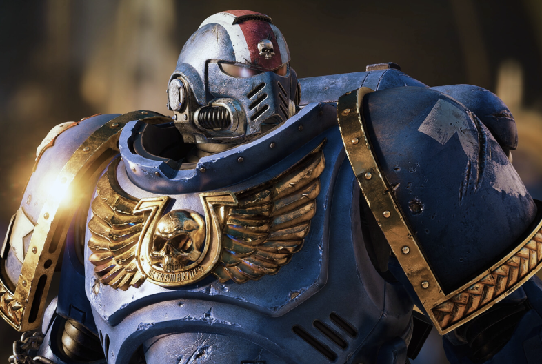
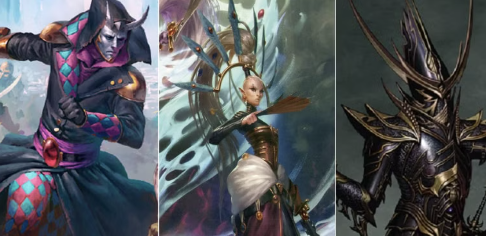
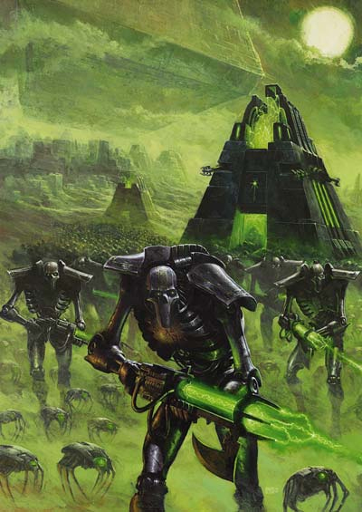
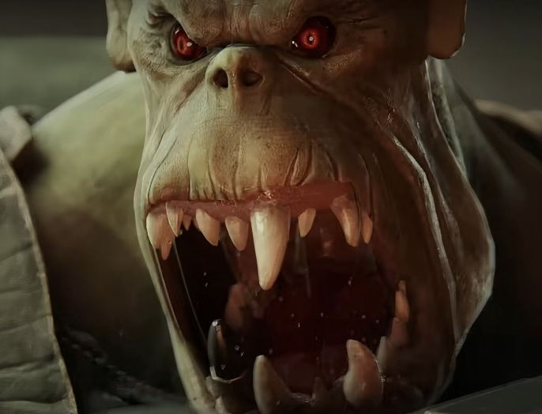

Iconic Factions

Space Marines
Genetically engineered super-soldiers, the Space Marines are humanity's greatest defenders.
Learn More
Chaos Space Marines
Once loyal Space Marines, these warriors have fallen to the temptations of Chaos.
Learn More

Eldar
A dying race of psychic aliens, the Eldar possess advanced technology and a mastery of warfare.
Learn More

Necrons
Ancient, robotic beings awakened from a long slumber, the Necrons are a formidable force.
Learn More

Orks
A brutal and savage race of alien warriors, the Orks thrive on violence and conquest.
Learn More